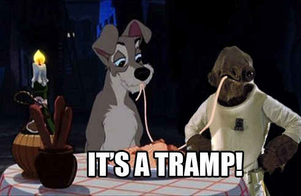
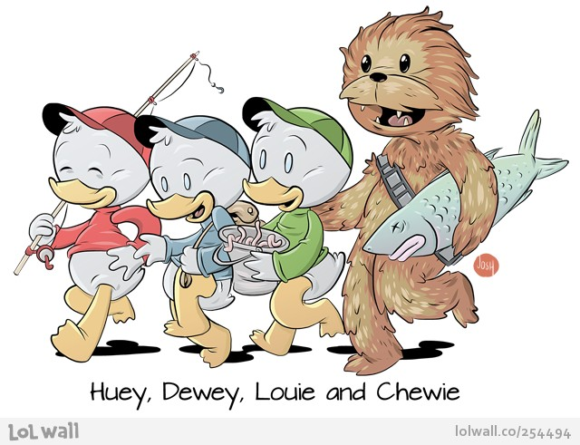
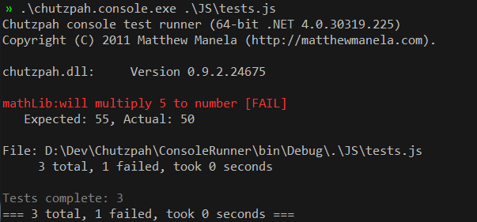
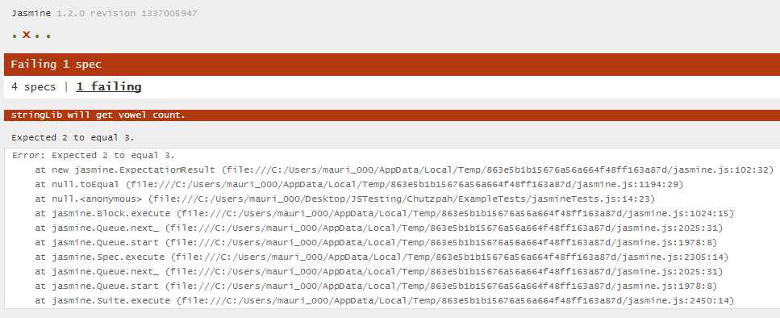
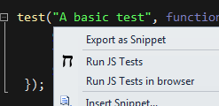
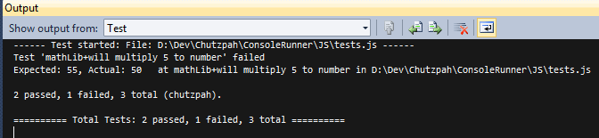
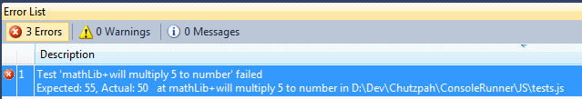
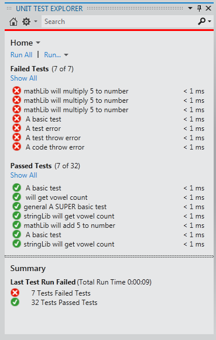

- The Test framework Jasmine is named the same as this Disney princess.
- There is probably a joke in there right?
Maurice Butler
@ButlerMaurice
Meldr / The Locker Project
Live Backchannel: #dddbrisbane
Ground Rules
Ground Rules
- Then this happened.
Ground Rules
- Then this...
Ground Rules
- Then this... 
Ground Rules
- Then this... 
Ground Rules
- And then worst of all...
Ground Rules
So there will be NO metion of the disney pricess kuffufle in this talk...

Sound Familiar?
- So your code complete?
- Yep!
- All your tests are written?
- Yep!
- And your JavaScript is tested?
- Errrmmm.... you can test that stuff?
Problems I cant solve
- Dont Write Tests Beacuse...
- Testing costs to much
- Testing is a waste of time
- Just check it in
- The customers will test it for us
- We dont do that here™
- If you still have these issues today, its time to find a new job.
The Tools
Chutzpah
Pronunciation: hutz·pah
Chutzpah is an open source JavaScript test runner
It enables you to run JavaScript unit tests from the command line and from inside of Visual Studio.
It also supports running in TeamCity
Chutzpah uses the PhantomJS headless browser to run tests
Chutzpah supports both the QUnit and Jasmine testing frameworks
The Tools
Chutzpah
Runs JavaScript unit tests from the command line
The Tools
Chutzpah
Or within a browser
The Tools
Chutzpah
Run JavaScript unit tests from inside of Visual Studio
  The Tools
Chutzpah
Integrates into VS 2012 Unit Test Explorer
The Tools
Jasmine 
Jasmine is a behavior-driven development framework for testing JavaScript code
It does not depend on any other JavaScript frameworks
It does not require a DOM
It has a clean, obvious "BDD similar" syntax so that you can easily write tests
It named after the flower, NOT some stoopid princess... <grumble>
The Tools
Jasmine
describe("A suite is just a function", function() {
var a;
it("and so is a spec", function() {
a = true;
expect(a).toBe(true);
});
});
DEMO
Something less 'hello world' more 'real world'
Assumptions
- Most of you:
- Use Visual Studio?
- Develop for the Web?
- Know how to use NuGet?
- Have a basic understanding of testing?
DEMO
Mocking / Spies
- Mocking is isolating the code you trying to test.
- It allows us to remove dependencies on other objects by replacing them with custom versions that behave in a predetermined way.
- As JavaScript is a dynamic lanuage, you can just replace accessable properties with whatever you want.
thingUnderTest.dependancy = {};
Mocking / Spies
Jasmine uses a concept called spies.
describe("a spy", function() { var bar = null, foo = { setBar: function(value) { bar = value; } }; spyOn(foo, 'setBar'); foo.setBar(123); it("tracks that the spy was called", function() { expect(foo.setBar).toHaveBeenCalled(); }); });
Mocking / Spies
Spies have special matchers / methods to help tests.
-
it("tracks that the spy was called", function() { expect(foo.setBar).toHaveBeenCalled(); }); it("tracks its number of calls", function() { expect(foo.setBar.calls.length).toEqual(1); }); it("tracks all the arguments of its calls", function() { expect(foo.setBar).toHaveBeenCalledWith(123); }); it("allows access to the instances of the calls", function() { expect(foo.setBar.calls[0].args[0]).toEqual(123); });
DEMO
Thanks!
Maurice Butler
@ButlerMaurice
Meldr / The Locker Project
Live Backchannel: #dddbrisbane